CAJAMARCA ROCK
Primera Edición
Septiembre 2021
[1] Introducción
Este es un análisis sobre las bandas de rock de Cajamarca (Perú) en uno de los servicios de transmisión de música más usado (Spotify), que da acceso a millones de canciones y otros contenidos de artistas de todo el mundo.
Teniendo como referencia la playlist Cajamarca Rock, y la información disponible en Spotify al 25.12.2020, se obtienen los datos necesarios que permitan mostrar los géneros musicales, características de las canciones, y perfiles de los artistas.

[2] Artistas
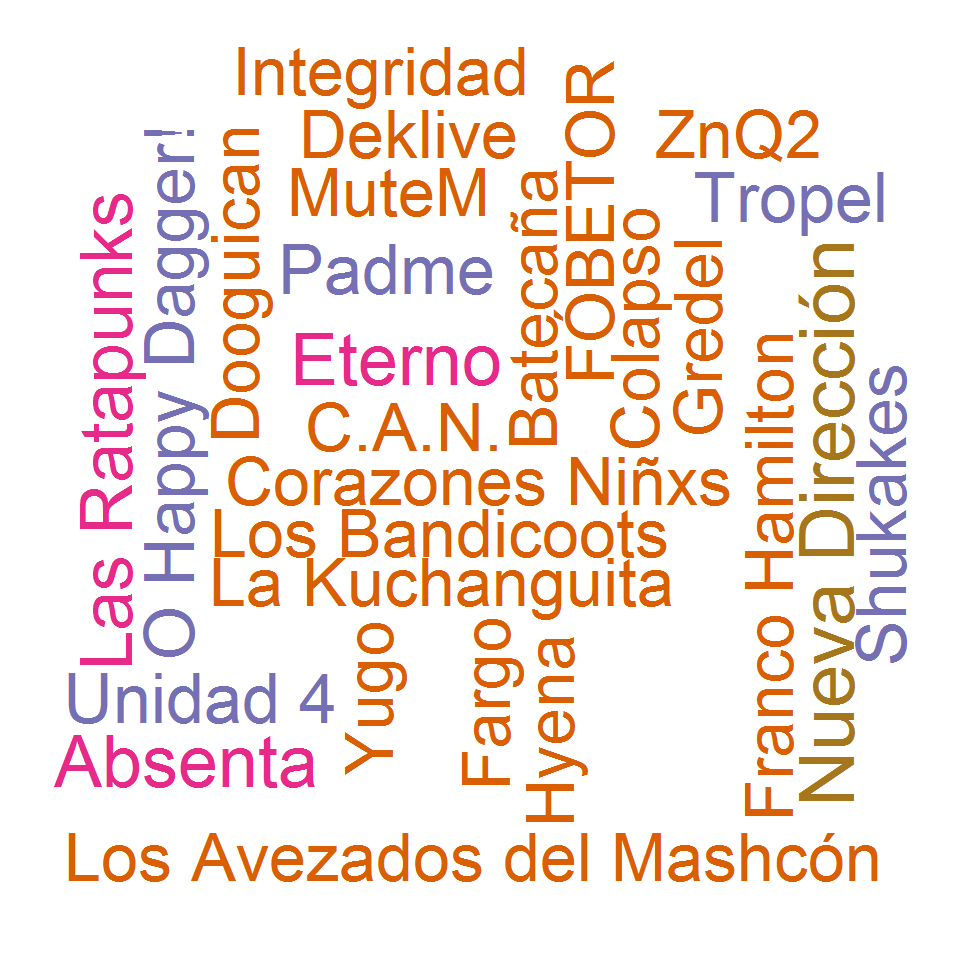
Total bandas: 38.
| Artista | Track | Album |
|---|---|---|
| Unidad4 | Ya Volverán | Fuerza Para Seguir |
| C.A.N. | Volar | Condenados Al Nacer |
| Shukakes | Quien Piensa En Ellos | Caxamarca Hardcore, Vol. I |
| Perturflacos | Hit Heaven | Hit Heaven |
| DaForest | Temblores | Temblores |
| Hyena | Die to Live | Bite of Heavy Metal |
| HumoAzul | Ardilla Loca | Simbiosis |
| NuevaDirección | Prejuicios | Silencios |
| LasRatapunks | Ministerio | Fracaso, Año De La Rata 2020 |
| Absenta | Demonios | Absenta |
| Padme | Abandonado | Abandonado |
| LaKuchanguita | Al ritmo del Jah | Paqueviaje |
| LosAvezadosdelMashcón | Me Roban | S/t |
| Velociraptors | Blisters | Blisters |
| CorazonesNiñxs | Corazones Niños | Corazones Niños |
| ZnQ2 | Chusheck | Chusheck |
| Gredel | Estrella | Underpop 4.1 |
| Eterno | Más De Lo Mismo | Sentimientos Oscuros |
| Batecaña | Domingo Por La mañana | No Sé Quién Soy Yo Pero No Soy Yo |
| ValorHumano | Seguiré | Caxamarca Hardcore, Vol. I |
| Tour18-A | Obsesión y Arrepentimiento | Obsesión y Arrepentimiento |
| Irrational | Código 11 | Adrenaline |
| Regret | Firmes Promesas | Caxamarca Hardcore, Vol. I |
| Colapso | Viaje | Espejos |
| Tropel | Entre tanta gente | TIempo |
| RauloTejada | Un Segundo | Un Segundo |
| Yugo | Serpiente | Yugo (Cajamarca) |
| PARQUECATARSIS | Lección Aprendida | De La revolución Y El Efecto |
| FrancoHamilton | Abriendo El Camino | Nudo De Luces |
| Integridad | Sigo De Pie | Caxamarca Hardcore, Vol. I |
| FÓBETOR | La canción Sin Nombre | La canción Sin Nombre |
| LosBandicoots | Bandicoot | Placebo EP |
| OHappyDagger! | Life Is a Plague | Life Is a Plague |
| Latemckor | Te Voy a Aniquilar | Te Voy a Aniquilar |
| Dooguican | Rompiendo Mentes | Underpop 4.1 |
| Deklive | Golpe a Golpe | Caxamarca Hardcore, Vol. I |
| MuteM | Bicephalous | Bicephalous |
| Fargo | Cadenas - extended | Discontinuidad |
[3] Perfiles
Seguidores & Popularidad
Se muestran datos de los seguidores en spotify de cada artista y se detalla la popularidad de cada banda, la cual se basa en la cantidad de las últimas reproducciones de sus canciones, considerando un valor que está entre 0 y 100, siendo 100 el más popular.
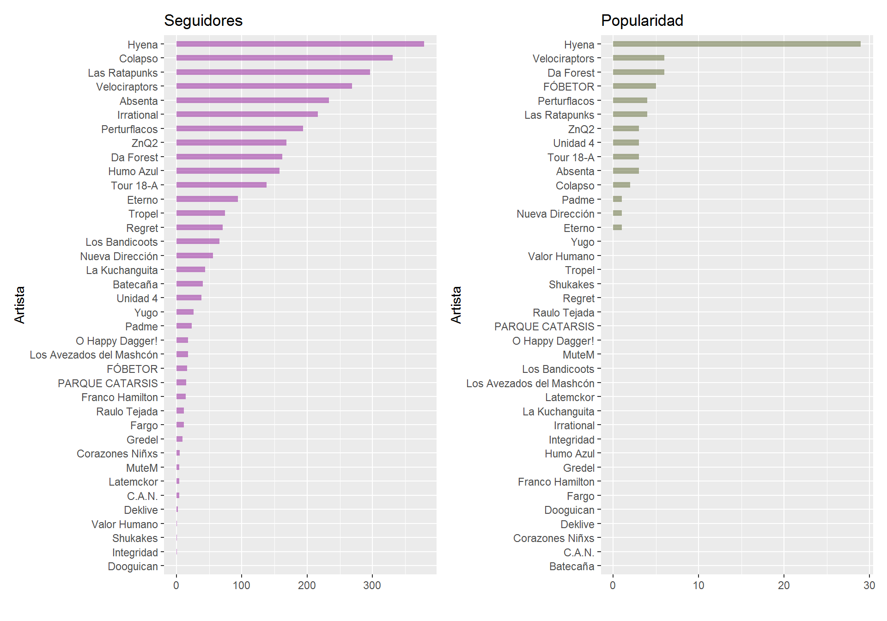
En el análisis, la banda con mayor popularidad (Hyena) alcanza un valor de 29/100, ubicándose en el primer tercio de la escala de puntos. De igual manera, al observar los datos, la banda con mayor cantidad de seguidores es Hyena (379).
Se propone un indicador alternativo para medir la popularidad definido como IP. Este se basa en la relación entre las variables obtenidas de los perfiles de cada artista: popularidad y seguidores (popularity/followers).
| Banda | Popularidad | Seguidores | IP |
|---|---|---|---|
| FÓBETOR | 5 | 16 | 0.3125 |
| Unidad 4 | 3 | 38 | 0.0789 |
| Hyena | 29 | 379 | 0.0765 |
| Padme | 1 | 23 | 0.0435 |
| Da Forest | 6 | 162 | 0.0370 |
| Velociraptors | 6 | 269 | 0.0223 |
| Tour 18-A | 3 | 138 | 0.0217 |
| Perturflacos | 4 | 194 | 0.0206 |
| Nueva Dirección | 1 | 56 | 0.0179 |
| ZnQ2 | 3 | 168 | 0.0179 |
| Las Ratapunks | 4 | 296 | 0.0135 |
| Absenta | 3 | 233 | 0.0129 |
| Eterno | 1 | 94 | 0.0106 |
| Colapso | 2 | 331 | 0.0060 |
Bajo este enfoque se puede observar que bandas con pocos seguidores y temas populares pueden generar una métrica mas consistente, como es el caso de Fóbetor que muestra un indicador de 0.3125, siendo el valor más alto en éste análisis.
Artistas relacionados
Se obtiene información sobre artistas similares a un artista determinado. La similitud se basa en el análisis del historial de escucha de la comunidad de Spotify.
En el siguiente cuadro se muestra a los artistas con los cuales las bandas analizadas tienen mayor relación (Top 10).
| Artista | Total |
|---|---|
| Difonia | 9 |
| Diazepunk | 8 |
| Cuchillazo | 7 |
| INYECTORES | 7 |
| 6 Voltios | 6 |
| Los Outsaiders | 6 |
| TOURISTA | 6 |
| Inzul | 5 |
| Mundaka | 5 |
| Velociraptors | 5 |
Bandas de Cajamarca y sus artistas relacionados.
|
|
|
|
|
|
También se realizó un análisis sobre la relación entre las bandas de Cajamarca; como se esperaba, se muestra una correlación positiva entre las bandas del género rock (Velociraptors, Tour 18-A, Perturflacos, Absenta y Daforest), mientras que la relación es inversa con las bandas ligadas al estilo punk o hardcore (Nueva Dirección y Eterno).
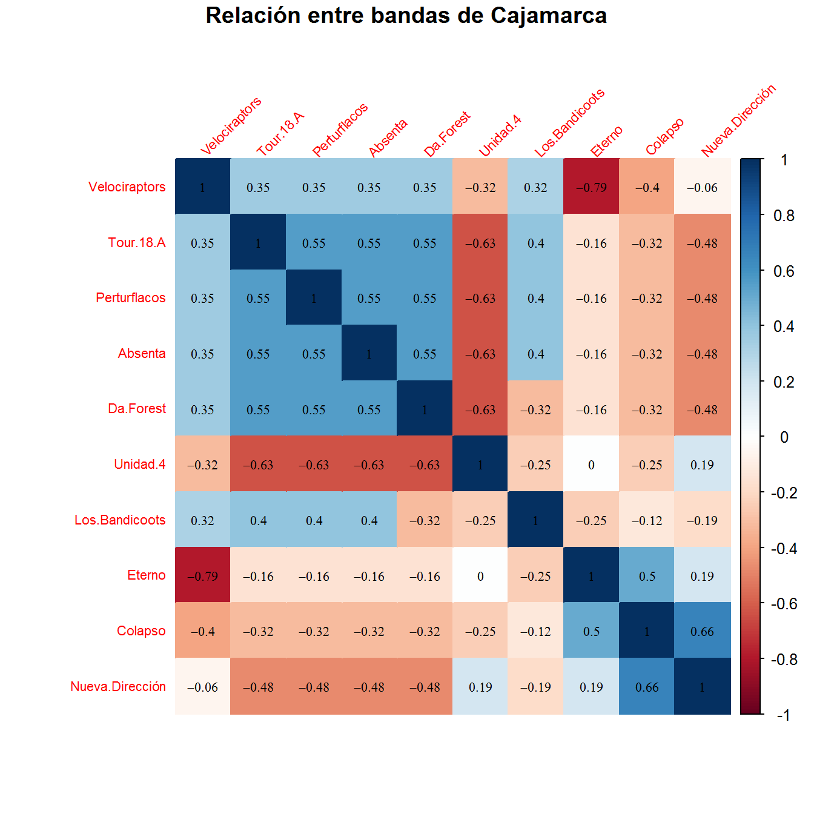
Producciones musicales
A continuación se muestra el detalle de las producciones tales como albums, EPs, singles.
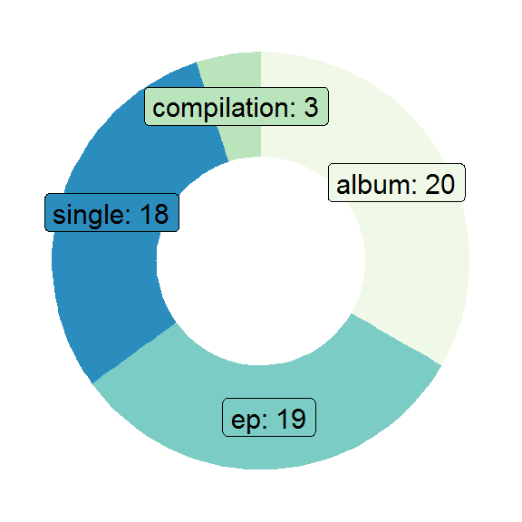
| artist | album | compilation | ep | single |
|---|---|---|---|---|
| Nueva Dirección | 3 | 0 | 0 | 2 |
| Tropel | 2 | 0 | 0 | 0 |
| Unidad 4 | 2 | 0 | 0 | 0 |
| Batecaña | 1 | 0 | 0 | 0 |
| Colapso | 1 | 0 | 0 | 0 |
| Deklive | 1 | 0 | 0 | 0 |
| Eterno | 1 | 0 | 2 | 0 |
| FÓBETOR | 1 | 0 | 0 | 0 |
| Franco Hamilton | 1 | 0 | 0 | 0 |
| Integridad | 1 | 0 | 0 | 0 |
| La Kuchanguita | 1 | 0 | 0 | 0 |
| Padme | 1 | 0 | 0 | 1 |
| Shukakes | 1 | 1 | 0 | 0 |
| Valor Humano | 1 | 0 | 0 | 0 |
| Velociraptors | 1 | 0 | 0 | 0 |
| ZnQ2 | 1 | 0 | 0 | 0 |
| Absenta | 0 | 0 | 1 | 2 |
| C.A.N. | 0 | 0 | 1 | 0 |
| Corazones Niñxs | 0 | 0 | 1 | 0 |
| Da Forest | 0 | 0 | 1 | 3 |
| Dooguican | 0 | 1 | 0 | 0 |
| Fargo | 0 | 0 | 1 | 0 |
| Gredel | 0 | 1 | 0 | 0 |
| Hyena | 0 | 0 | 1 | 0 |
| Las Ratapunks | 0 | 0 | 2 | 1 |
| Latemckor | 0 | 0 | 0 | 1 |
| Los Avezados del Mashcón | 0 | 0 | 1 | 0 |
| Los Bandicoots | 0 | 0 | 1 | 0 |
| MuteM | 0 | 0 | 0 | 1 |
| O Happy Dagger! | 0 | 0 | 1 | 1 |
| PARQUE CATARSIS | 0 | 0 | 1 | 0 |
| Perturflacos | 0 | 0 | 1 | 2 |
| Raulo Tejada | 0 | 0 | 0 | 1 |
| Tour 18-A | 0 | 0 | 3 | 3 |
| Yugo | 0 | 0 | 1 | 0 |
Respecto a las fechas de lanzamiento de las producciones observamos un repunte a partir de 2017. Si bien los albums se han seguido produciendo, los singles son los que presentan la mayor cantidad en estos últimos años.
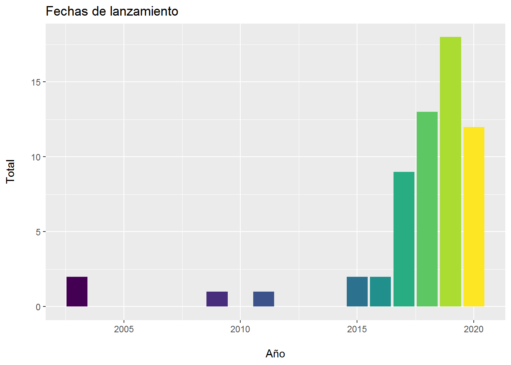
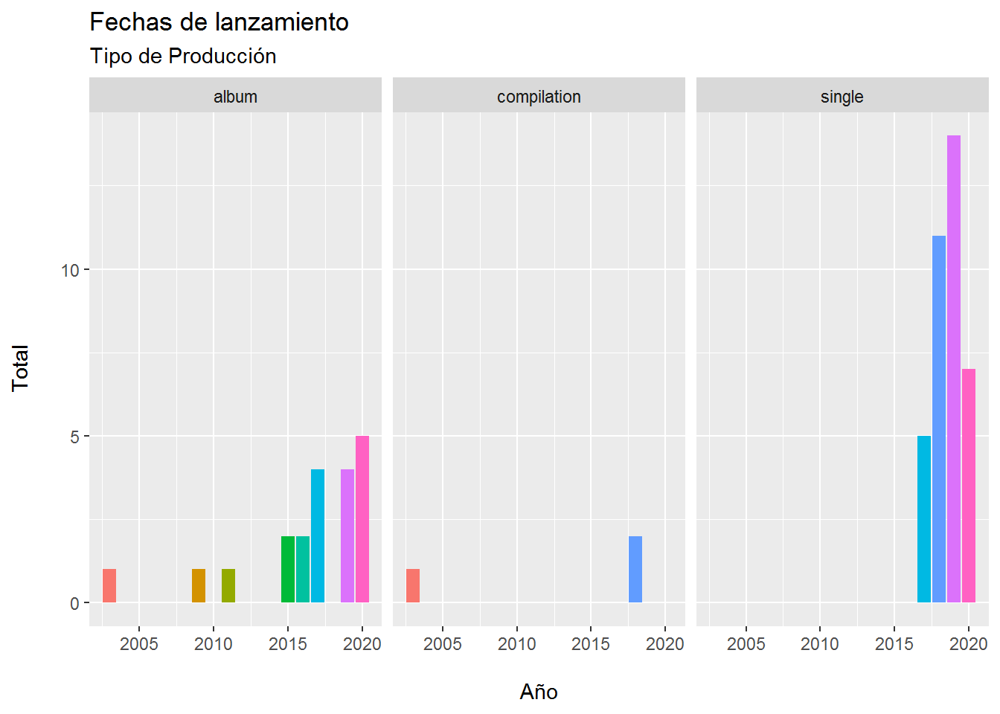
Respecto a las canciones, las bandas con mayor cantidad son Nueva Dirección (31), Unidad 4 (26) y Tropel (23).
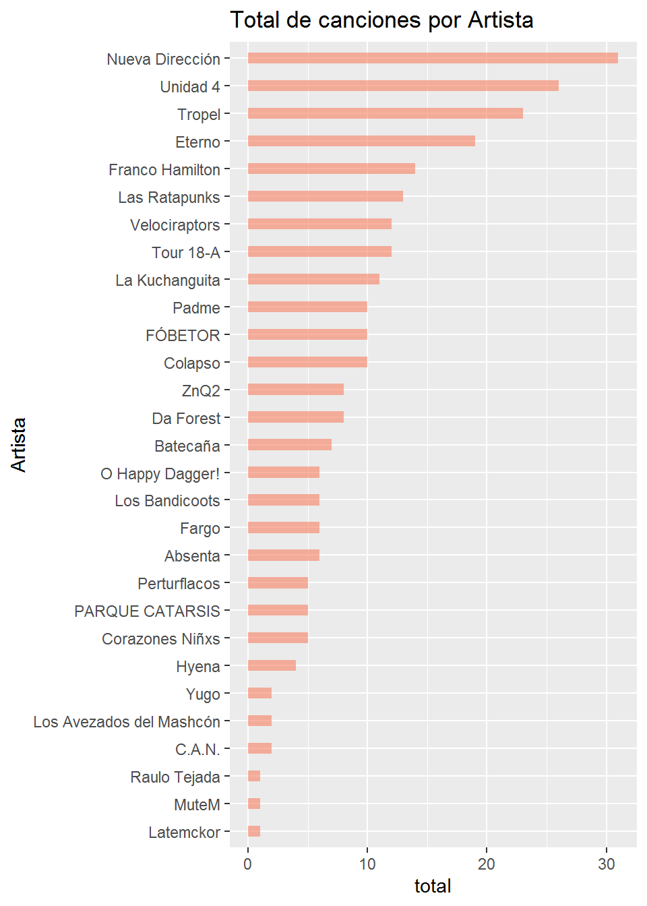
Analizando la variable popularity (popularidad de las canciones), se observa que esta se distribuye de manera asimétrica, agrupando valores cercanos a 0 y con un valor promedio de 1.38.
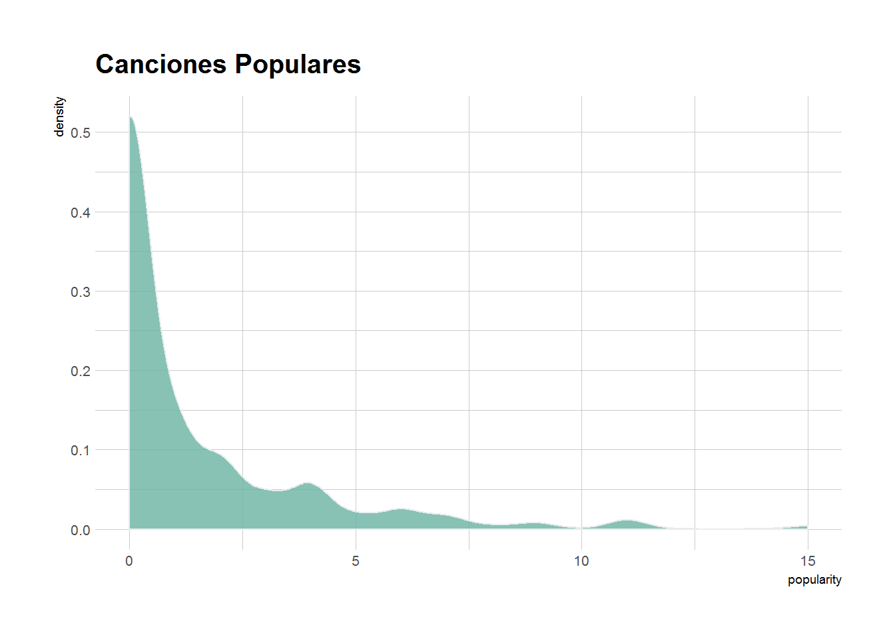
| artist | name | popularity |
|---|---|---|
| FÓBETOR | El Encuentro Final | 15 |
| Perturflacos | Lunar | 11 |
| Da Forest | Temblores | 11 |
| Velociraptors | Nubes | 11 |
| Da Forest | Espejismos | 9 |
| FÓBETOR | Dejavu | 9 |
| Absenta | Demonios | 8 |
| Da Forest | Tequila | 7 |
| Da Forest | Café | 7 |
| Las Ratapunks | Los Ladrones | 7 |
De igual manera, al analizar la variable popularidad de las producciones se aprecia que presenta la misma distribución asimétrica, agrupando valores cercanos a 0 y con un valor promedio de 2.03.
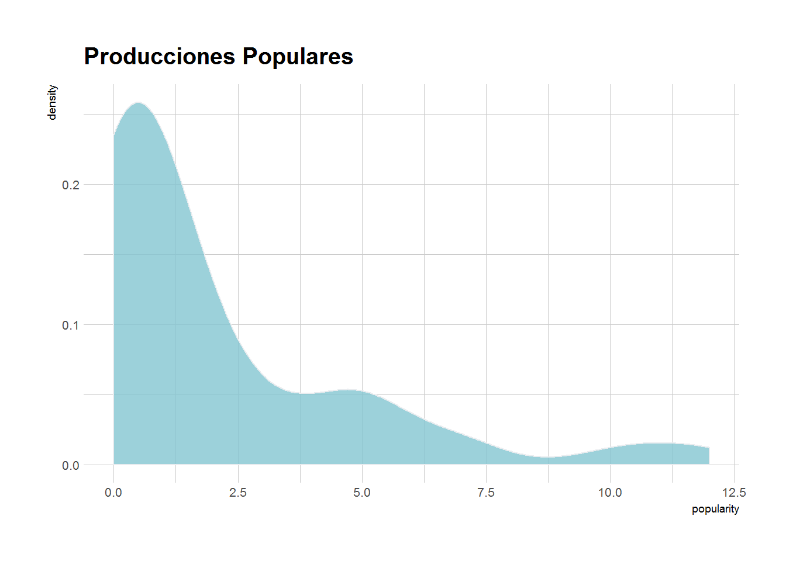
| artist | name | popularity |
|---|---|---|
| Velociraptors | Blisters | 12 |
| FÓBETOR | Juegos Peligrosos | 11 |
| Da Forest | Espejismos | 10 |
| Las Ratapunks | Fracaso, Año de la Rata 2020 | 7 |
| Perturflacos | Sin Ti Sin Par | 7 |
| ZnQ2 | Chusheck | 6 |
| Absenta | Absenta | 5 |
| Colapso | Espejos | 5 |
| Da Forest | Temblores | 5 |
| Unidad 4 | Nacido Libre | 5 |
Música
| Items | Features |
|---|---|
| Danceability | La propiedad de una canción para bailar utilizando una combinación de diferentes elementos: tempo, ritmo, estabilidad, fuerza del ritmo y regularidad general. Un valor de 0.0 denota que la canción es menos bailable, mientras que un valor de 1.0 indica que una canción es la más bailable. |
| Energy | Variable utilizada para describir la medida perceptual de intensidad y actividad, con rangos de 0.0 a 1.0. Una canción de alta energía generalmente suena rápida, fuerte y ruidosa. |
| Loudness | Medido en decibelios (dB). Estos valores de sonoridad se promedian a lo largo de toda la pista y son útiles para comparar la sonoridad relativa. El rango de volumen es de -60dB a 0. |
| Speechiness | Detecta las veces que han hablado en una canción (palabras y cantidad). Cuanto más impulsada por el habla sea una pista, como un podcast o un programa de entrevistas, un comentario, etc., más cerca de 1.0 estará el valor del atributo. Cualquier valor por debajo de 0,33 representa una pista en la que la gran mayoría es principalmente música con poca o ninguna palabra hablada. |
| Acousticness | Una medida de confianza de 0 a 1 de si la pista es acústica. Valores cercanos a 1 refleja una alta confianza en que la pista es acústica. |
| Instrumentalness | Una medida de si la canción carece de contenido vocal o no. El contenido vocal se define como palabras o raps, pero excluye las palabras pequeñas como ‘ahh’ y ‘ooh’, ya que se consideran instrumentalidad. Por lo tanto, si el valor de instrumentalidad está cerca de 1.0, la canción carece de contenido vocal. |
| Liveness | Característica que predice si la canción se interpretará en vivo frente a una audiencia. Después de detectar si existe o no presencia de audiencia, a una canción se le asigna un valor de 0-1 en el que un valor más cercano a 1 indica que hay una audiencia presente. |
| Valence | Asociado con la ‘emoción’ de la canción, por lo que una canción puede describirse como feliz y con valencia positiva o triste y con valencia negativa. Spotify tiene específicamente un experto en música que categoriza las canciones de muestra por su valencia, que luego utilizan el aprendizaje automático (ML) para aplicarlo a otras canciones. Se mide de 0.0 a 1.0, las canciones que están más cerca de 1 se consideran canciones “felices / alegres”. |
| Tempo | Relacionado al BPM de una canción (beats por minuto). Mide el ritmo o velocidad de una canción y se deriva directamente de la duración promedio del beat. |
| duration_m | Duración de la canción (en minutos). |
Las bandas y tracks en promedio resaltan por su energía, presentan cierta tendencia a la nostalgia o tristeza, carecen de características para ser considerados como “bailables”, las pistas en su mayoría son considerados como música por lo que no se puede reconocer adecuadamente contenido vocal o contienen pocas palabras, y por último, los tracks no son considerados temas acústicos.
| Variable | Promedio | Desviación Estandar | Mediana |
|---|---|---|---|
| danceability | 0.4586 | 0.1170 | 0.4640 |
| energy | 0.8285 | 0.1479 | 0.8690 |
| loudness | -6.1563 | 2.3962 | -5.8760 |
| speechiness | 0.0637 | 0.0448 | 0.0468 |
| acousticness | 0.0400 | 0.1178 | 0.0029 |
| instrumentalness | 0.1167 | 0.2421 | 0.0011 |
| liveness | 0.1786 | 0.1142 | 0.1330 |
| valence | 0.5058 | 0.2123 | 0.5080 |
| tempo | 128.6068 | 32.8953 | 122.4980 |
| duration_m | 3.3969 | 1.0932 | 3.3000 |
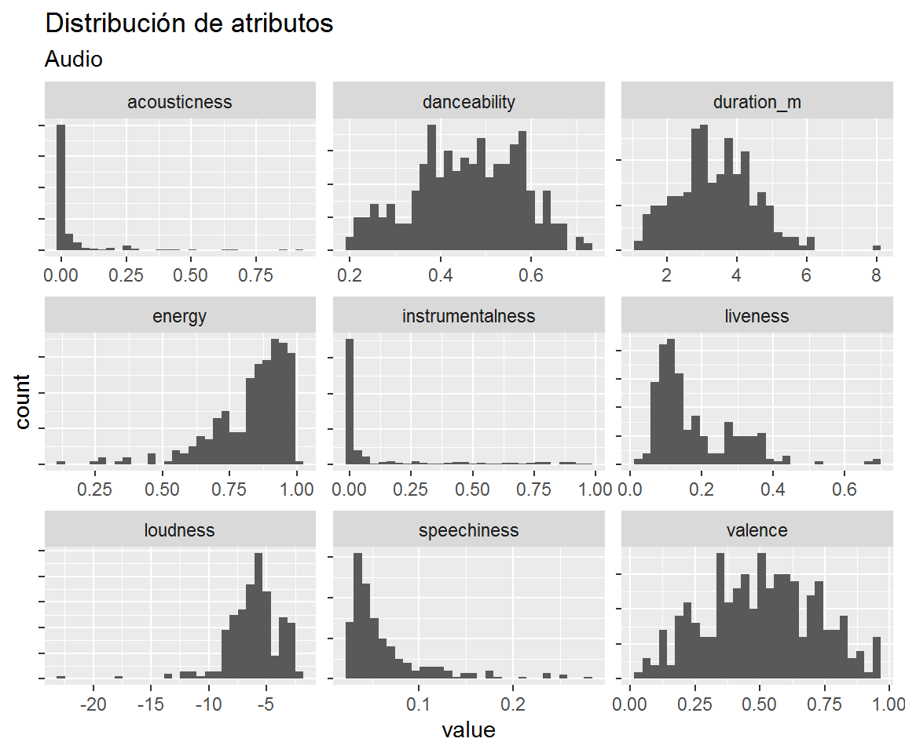
| artist | danceability | energy | loudness | speechiness | acousticness | instrumentalness | liveness | valence | duration_m |
|---|---|---|---|---|---|---|---|---|---|
| Absenta | 0.6068 | 0.6843 | -7.8257 | 0.0416 | 0.1738 | 0.0598 | 0.1614 | 0.6990 | 4.8383 |
| Batecaña | 0.4761 | 0.8669 | -6.0843 | 0.0426 | 0.0035 | 0.0112 | 0.0949 | 0.4883 | 3.5529 |
| C.A.N. | 0.5075 | 0.9130 | -5.7560 | 0.0422 | 0.0002 | 0.0000 | 0.2240 | 0.4075 | 4.1300 |
| Colapso | 0.4324 | 0.6518 | -8.4836 | 0.0341 | 0.0227 | 0.0347 | 0.1920 | 0.4067 | 5.0520 |
| Corazones Niñxs | 0.4280 | 0.7792 | -6.2310 | 0.0423 | 0.0643 | 0.4630 | 0.1011 | 0.4444 | 4.2280 |
| Da Forest | 0.5151 | 0.7819 | -6.0925 | 0.0364 | 0.0222 | 0.2863 | 0.1538 | 0.4090 | 3.0812 |
| Eterno | 0.4434 | 0.8874 | -5.8843 | 0.0597 | 0.0013 | 0.1283 | 0.2042 | 0.5835 | 2.5632 |
| Fargo | 0.4355 | 0.7028 | -11.1103 | 0.0701 | 0.0907 | 0.1900 | 0.2308 | 0.3783 | 4.0367 |
| FÓBETOR | 0.4397 | 0.8561 | -5.3970 | 0.0522 | 0.0099 | 0.0112 | 0.2057 | 0.5662 | 4.3520 |
| Franco Hamilton | 0.3799 | 0.6979 | -3.6346 | 0.0386 | 0.0632 | 0.0091 | 0.1442 | 0.3146 | 3.5207 |
| Hyena | 0.4395 | 0.8925 | -5.3853 | 0.0766 | 0.0005 | 0.3065 | 0.1413 | 0.5520 | 3.3475 |
| La Kuchanguita | 0.5263 | 0.8091 | -5.6742 | 0.0644 | 0.0079 | 0.0732 | 0.1669 | 0.8121 | 3.5973 |
| Las Ratapunks | 0.4529 | 0.8997 | -7.0722 | 0.0531 | 0.0095 | 0.5844 | 0.1990 | 0.4838 | 1.9131 |
| Latemckor | 0.2180 | 0.9780 | -2.9160 | 0.1570 | 0.0015 | 0.0000 | 0.6610 | 0.4620 | 3.6000 |
| Los Avezados del Mashcón | 0.5690 | 0.9365 | -6.0560 | 0.0312 | 0.0002 | 0.2251 | 0.1395 | 0.9145 | 2.0900 |
| Los Bandicoots | 0.3583 | 0.6747 | -8.4603 | 0.0616 | 0.0030 | 0.0957 | 0.1810 | 0.5082 | 4.0500 |
| MuteM | 0.5290 | 0.5120 | -13.6910 | 0.0262 | 0.1460 | 0.8910 | 0.1080 | 0.3600 | 3.7500 |
| Nueva Dirección | 0.4621 | 0.9406 | -4.7973 | 0.1270 | 0.0020 | 0.0418 | 0.1690 | 0.3154 | 2.7648 |
| O Happy Dagger! | 0.4698 | 0.8835 | -6.2093 | 0.0595 | 0.0021 | 0.5923 | 0.1399 | 0.4948 | 3.6317 |
| Padme | 0.4956 | 0.9355 | -6.9190 | 0.0564 | 0.0077 | 0.0199 | 0.2235 | 0.6662 | 2.3730 |
| PARQUE CATARSIS | 0.4716 | 0.8586 | -5.8342 | 0.0383 | 0.0061 | 0.0013 | 0.1780 | 0.6876 | 4.6880 |
| Perturflacos | 0.4492 | 0.6138 | -7.7104 | 0.0338 | 0.0703 | 0.3597 | 0.2136 | 0.4510 | 4.9240 |
| Raulo Tejada | 0.5800 | 0.7860 | -8.0490 | 0.0275 | 0.0181 | 0.0002 | 0.0872 | 0.8650 | 4.2100 |
| Tour 18-A | 0.5863 | 0.7012 | -8.0742 | 0.0548 | 0.1616 | 0.0001 | 0.1154 | 0.5449 | 3.6842 |
| Tropel | 0.4270 | 0.8509 | -3.8600 | 0.0497 | 0.0598 | 0.0132 | 0.1596 | 0.5877 | 3.6296 |
| Unidad 4 | 0.4092 | 0.8783 | -7.2708 | 0.0776 | 0.0388 | 0.0376 | 0.2305 | 0.4795 | 2.7954 |
| Velociraptors | 0.4238 | 0.7376 | -7.1243 | 0.0449 | 0.0302 | 0.1615 | 0.1993 | 0.5072 | 3.5433 |
| Yugo | 0.4865 | 0.9490 | -5.8445 | 0.1108 | 0.0005 | 0.1074 | 0.1330 | 0.3875 | 3.1800 |
| ZnQ2 | 0.5439 | 0.8985 | -3.7840 | 0.0896 | 0.2086 | 0.0005 | 0.1543 | 0.5820 | 4.1200 |
¿Algunas conclusiones?
- El artista más bailable: Absenta.
- El artista con mayor energía: Latemckor.
- El artista con mayor volumen (medido en decibelios): Latemckor.
- El artista que más habla en una canción (palabras y cantidad): Latemckor.
- El artista con mejor acústica: ZnQ2.
- El artista mas instrumental: MuteM.
- El artista que presenta canciones en vivo: Latemckor.
- El artista más feliz/alegre: Los Avezados del Mashcón.
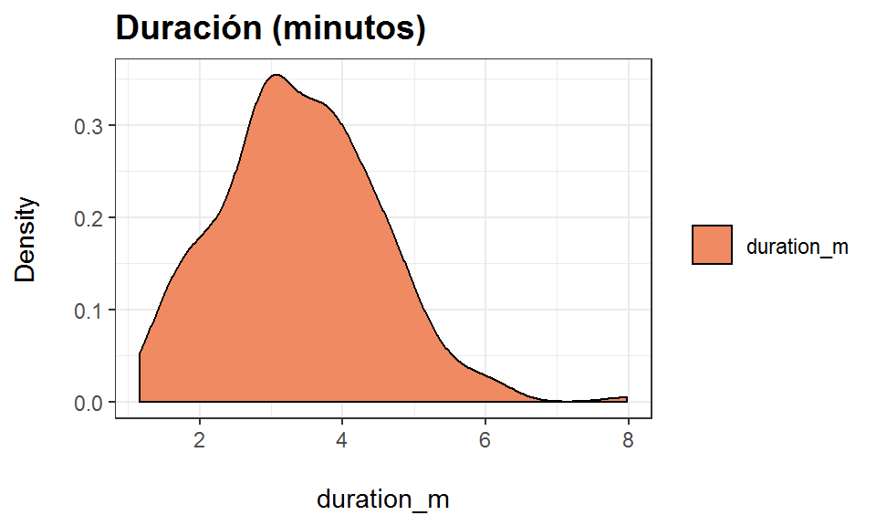
¿Algunas conclusiones?
- Duración promedio (minutos): 3.63.
- El artista con las canciones mas cortas: Las Ratapunks.
- El artista con las canciones mas largas: Colapso.
De manera individual se puede observar el detalle de las características de las canciones de acuerdo a sus atributos de audio (danceability, energy, loudness, speechiness, acousticness, instrumentalness, liveness, valence).
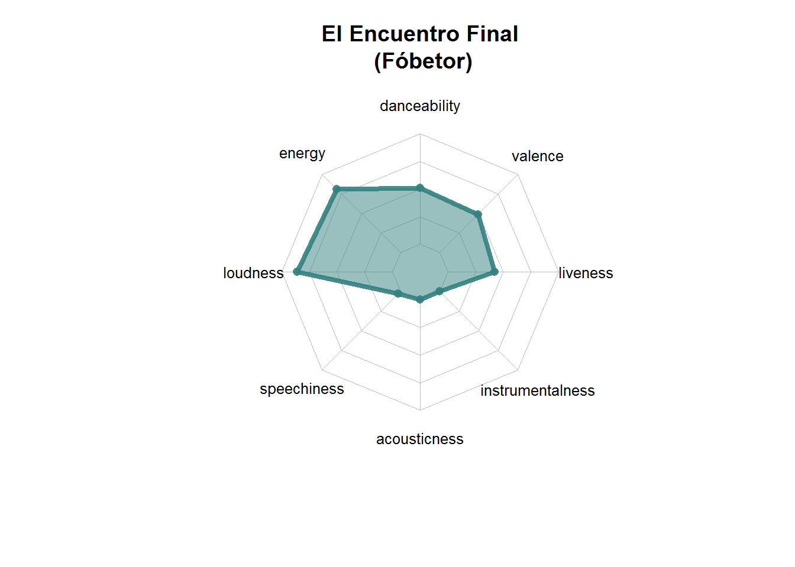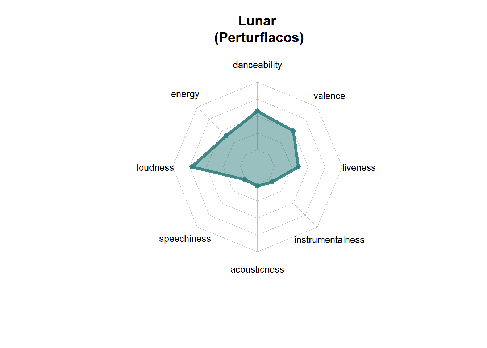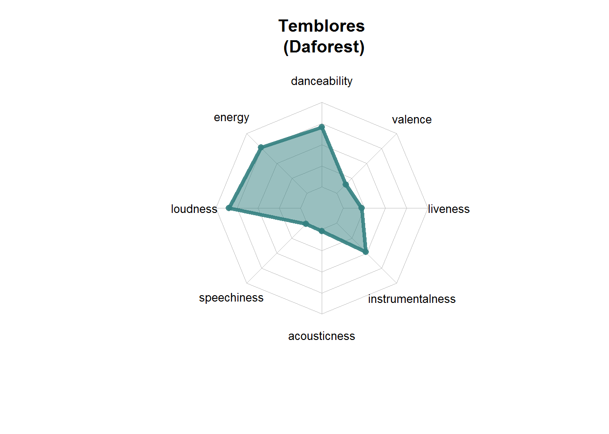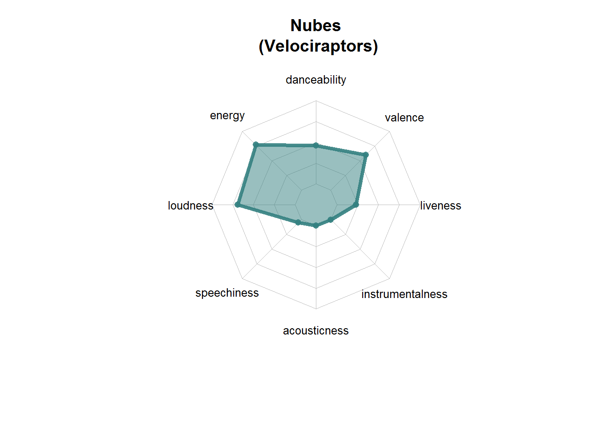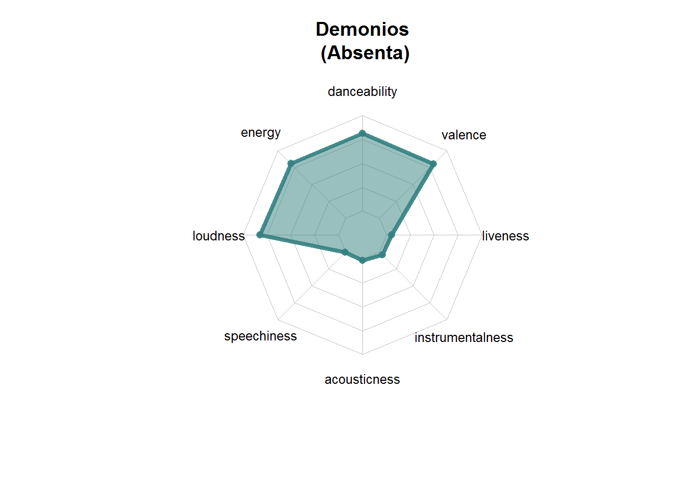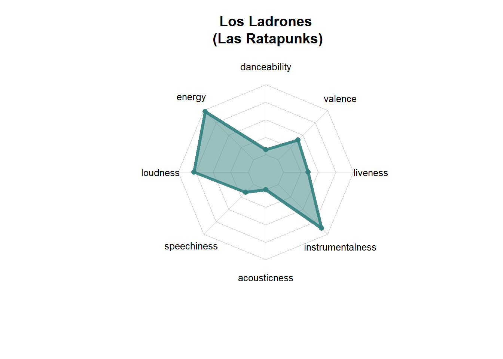
Se muestra también, de manera conjunta, las características del top de canciones populares.
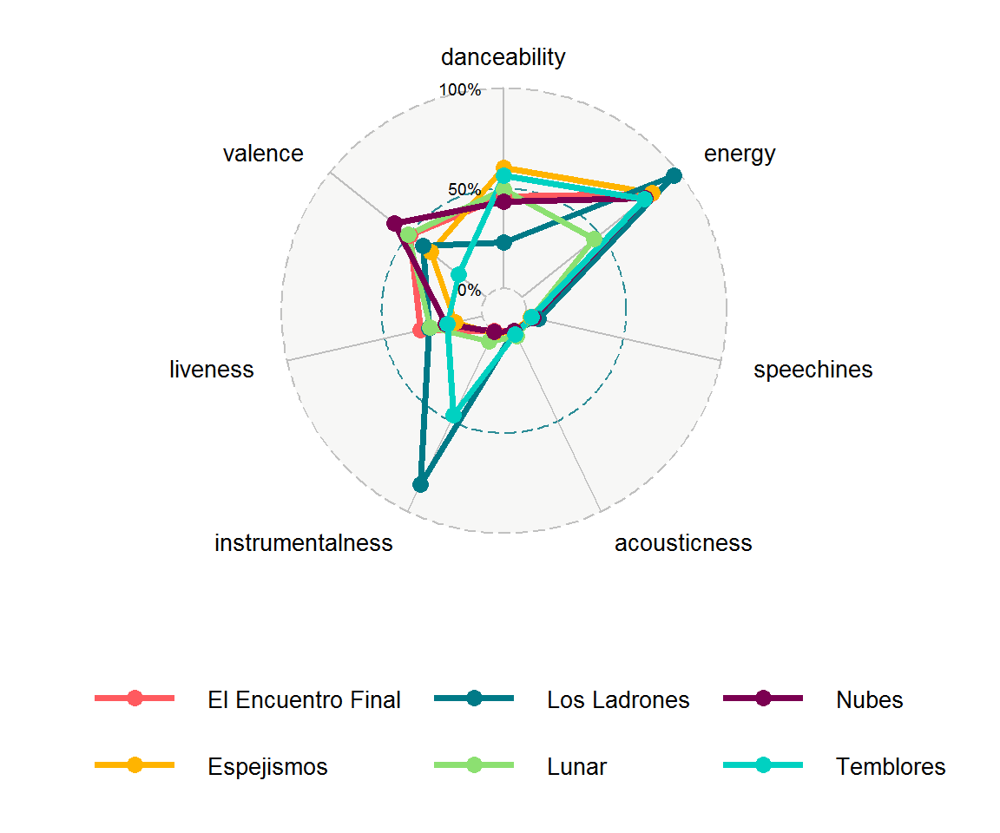
Bandas
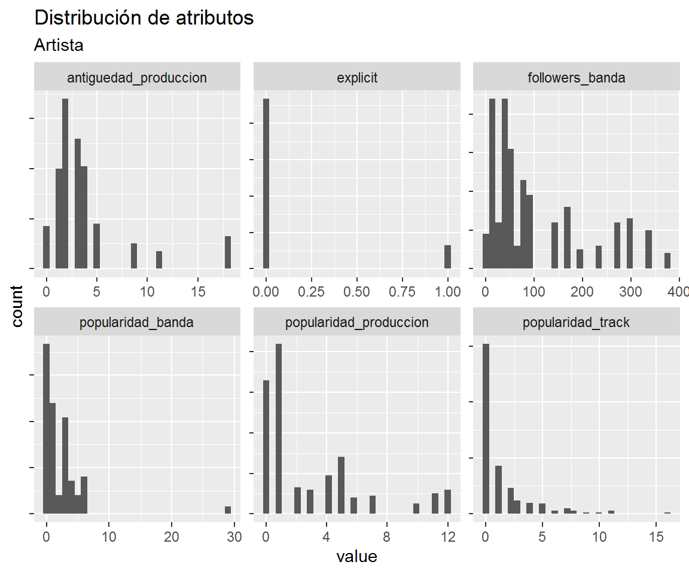
¿Algunas conclusiones?
- Banda con la producción mas antigua: Unidad 4.
- Artista con letras explicitas: Las Ratapunks.
- Banda con mas seguidores: Hyena.
- Banda con mayor popularidad: Hyena.
- Producción mas popular: Blisters (Velociraptors).
- Track mas popular: El Encuentro Final (FÓBETOR).
[4] Music Analytics
El objetivo es encontrar características comunes sobre el total de variables. Se identifican elementos similares dentro del conjunto de datos de forma que las observaciones que están dentro de un mismo grupo sean parecidas entre sí y a la vez distintas a las observaciones de otros grupos.
Variables de Audio
Las variables (o atributos) de audio de las canciones llegan a ser importantes para cada banda; si bien no existe una regla para clasificar una canción o artista, estas variables nos permiten aproximarnos al sonido de cada agrupación.
Se aplica un algoritmo de machine learning para identificar segmentos a los cuales podría pertenecer cada track.
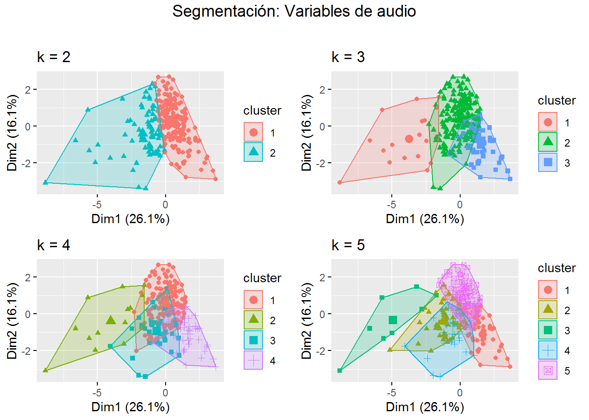
De manera gráfica observamos que el algoritmo identifica los segmentos con características comunes. En nuestro caso, y para evidenciar las diferencias entre estas agrupaciones, consideramos 3 grupos (k=3).
| cluster_audio | danceability | energy | loudness | speechiness | acousticness | instrumentalness | liveness | valence | duration_m | total_canciones |
|---|---|---|---|---|---|---|---|---|---|---|
| 1 | 0.5366111 | 0.5103333 | -10.480000 | 0.0443444 | 0.3675556 | 0.1482389 | 0.1648778 | 0.3972500 | 4.151111 | 18 |
| 2 | 0.4624404 | 0.8260570 | -6.018440 | 0.0476192 | 0.0152346 | 0.1309948 | 0.1544301 | 0.5602539 | 3.509586 | 193 |
| 3 | 0.4196182 | 0.9410545 | -5.225109 | 0.1266673 | 0.0196127 | 0.0562298 | 0.2677945 | 0.3503618 | 2.754545 | 55 |
Para determinar las características que predominan en los segmentos aplicamos un algoritmo basado en árboles de decisión debido a su facilidad de interpretación. En este caso, el segmento 1 lo conforman aquellas bandas con un speechiness menor a 0.079 y una acústica mayor o igual a 0.058, mientras que al segmento 2 corresponden las agrupaciones con un speechiness menor a 0.079 y una acústica menor a 0.058. Por último, el segmento 3 queda claramente definido por las bandas que poseen un speechiness mayor o igual a 0.079.
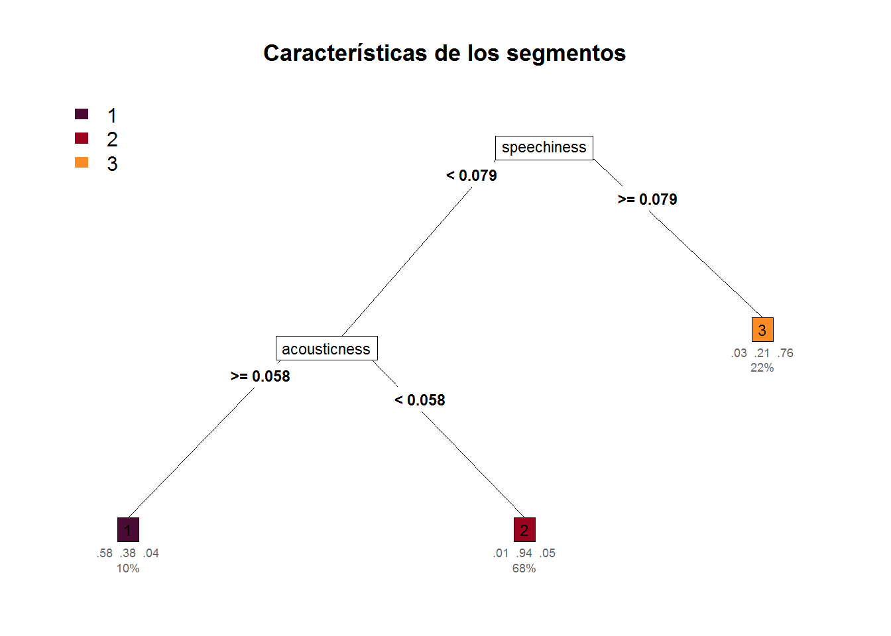
Al obtener aleatoriamente tres bandas de cada segmento podemos comparar sus características. Así por ejemplo, el segmento 1 lo conforman las bandas con una energía baja (0.63 a 84), al segmento 2 pertenecen las bandas con una energía media (0.91 a 0.93), y el segmento 3 incluye las bandas con mayor energía (0.97 a 0.98).
| artist | cluster_audio | danceability | energy | loudness | speechiness | acousticness | instrumentalness | liveness | valence | duration_m |
|---|---|---|---|---|---|---|---|---|---|---|
| ZnQ2 | 1 | 0.624500 | 0.84000 | -4.577500 | 0.0789000 | 0.5225000 | 0.0018208 | 0.1655000 | 0.702000 | 4.39000 |
| Fargo | 1 | 0.563000 | 0.72400 | -11.307000 | 0.0836500 | 0.2460000 | 0.0020270 | 0.1555000 | 0.498000 | 3.65000 |
| Corazones Niñxs | 1 | 0.305000 | 0.63100 | -7.248000 | 0.0410000 | 0.2550000 | 0.7670000 | 0.1190000 | 0.230000 | 4.68000 |
| Los Avezados del Mashcón | 2 | 0.569000 | 0.93650 | -6.056000 | 0.0312000 | 0.0001515 | 0.2251000 | 0.1395000 | 0.914500 | 2.09000 |
| Padme | 2 | 0.534125 | 0.92475 | -6.800375 | 0.0511125 | 0.0093012 | 0.0000614 | 0.2248750 | 0.765125 | 2.49875 |
| Yugo | 2 | 0.481000 | 0.91500 | -5.880000 | 0.0466000 | 0.0002000 | 0.2000000 | 0.1570000 | 0.561000 | 3.52000 |
| Las Ratapunks | 3 | 0.325000 | 0.98600 | -6.375000 | 0.0862667 | 0.0072316 | 0.4256667 | 0.2603333 | 0.259000 | 1.85000 |
| Yugo | 3 | 0.492000 | 0.98300 | -5.809000 | 0.1750000 | 0.0007340 | 0.0147000 | 0.1090000 | 0.214000 | 2.84000 |
| Padme | 3 | 0.341500 | 0.97850 | -7.393500 | 0.0773000 | 0.0013000 | 0.0991600 | 0.2180000 | 0.270500 | 1.87000 |
Variables del Artista
Las variables de los artistas están conformadas por las características no musicales de la banda tales como antigüedad de sus producciones, popularidad, seguidores, total de canciones, entre otros.
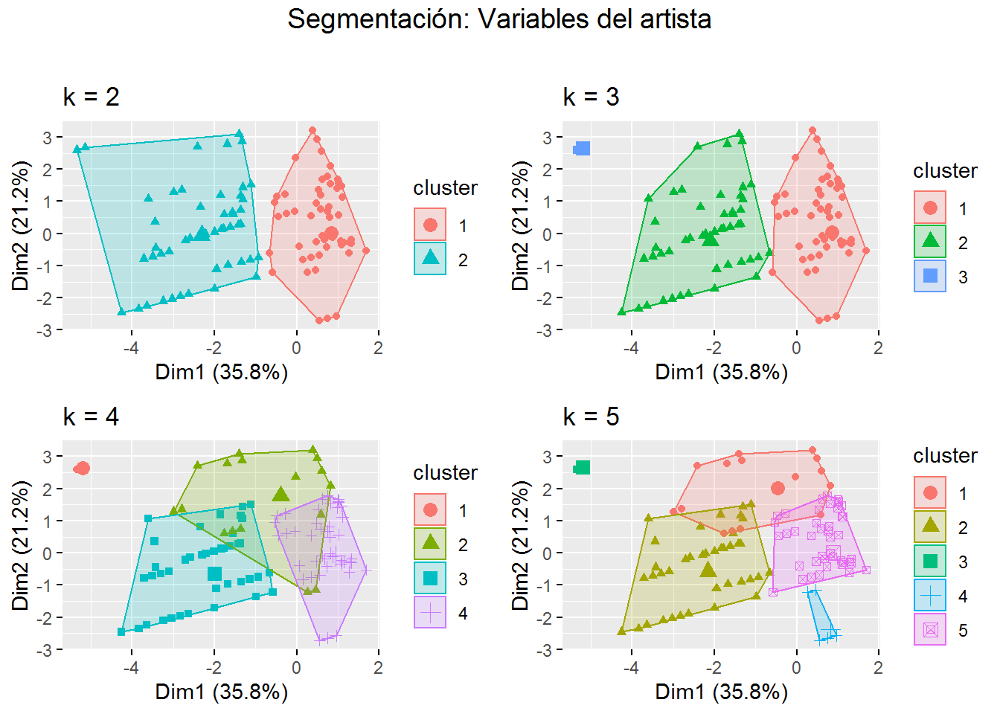
En este caso el algoritmo nos sugiere 2 segmentos (k=2). Para determinar las diferencias entre ellos, evaluamos la variable popularidad, observando que en promedio las bandas que conforman el segmento 1 son menos populares que el segmento 2 (1.02 < 5.44).
| cluster_banda | antiguedad_produccion | explicit | popularity_banda | followers_banda | popularidad_produccion | track_total | popularity_track | total_canciones |
|---|---|---|---|---|---|---|---|---|
| 1 | 4.186528 | 0.0829016 | 1.020725 | 48.72021 | 1.652850 | 9.093264 | 0.3108808 | 193 |
| 2 | 2.452055 | 0.2191781 | 5.438356 | 239.86301 | 6.273973 | 6.698630 | 4.0410959 | 73 |
En este tipo de datos, los atributos predominantes se refieren a la popularidad de las canciones así como a la cantidad de seguidores de la banda los cuales diferencian aceptablemente ambos segmentos.
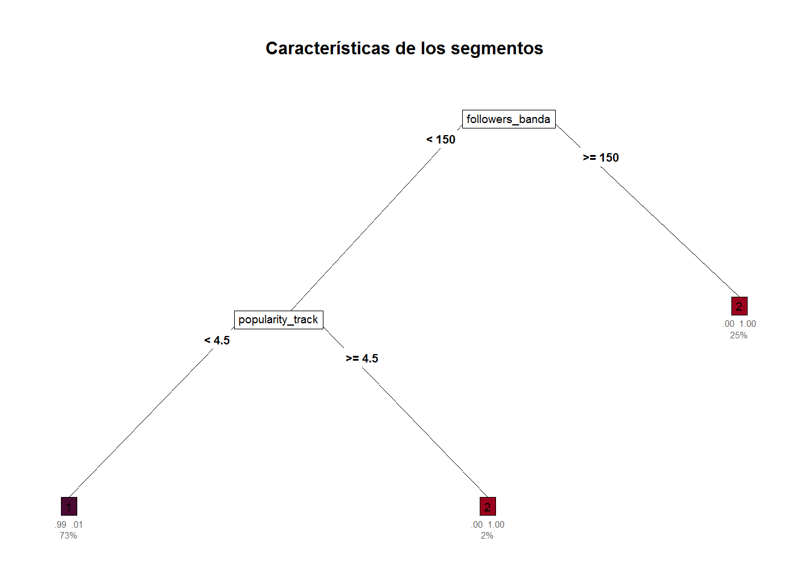
Obteniendo aleatoriamente cinco bandas de cada grupo, y analizando la cantidad de seguidores, vemos una clara diferencia entre ambos segmentos, pues las bandas del segmento 1 presentan menos seguidores (56 a 138) en comparación a las bandas del segmento 2 (233 a 379).
| artist | cluster_banda | antiguedad_produccion | explicit | popularity_banda | followers_banda | popularidad_produccion | track_total | popularity_track |
|---|---|---|---|---|---|---|---|---|
| Tour 18-A | 1 | 3.000000 | 0.0000000 | 3 | 138 | 1.8750000 | 3.875000 | 1.0000000 |
| Eterno | 1 | 1.894737 | 0.0526316 | 1 | 94 | 0.8421053 | 7.631579 | 0.1052632 |
| Tropel | 1 | 4.000000 | 0.0000000 | 0 | 74 | 0.4782609 | 11.521739 | 0.0869565 |
| Los Bandicoots | 1 | 1.000000 | 0.0000000 | 0 | 66 | 1.0000000 | 6.000000 | 0.1666667 |
| Nueva Dirección | 1 | 6.290323 | 0.0322581 | 1 | 56 | 0.7096774 | 9.516129 | 0.0000000 |
| Hyena | 2 | 2.000000 | 1.0000000 | 29 | 379 | 1.0000000 | 4.000000 | 1.2500000 |
| Colapso | 2 | 5.000000 | 0.0000000 | 2 | 331 | 5.0000000 | 10.000000 | 1.3000000 |
| Las Ratapunks | 2 | 1.076923 | 0.3076923 | 4 | 296 | 5.1538462 | 5.615385 | 3.2307692 |
| Velociraptors | 2 | 2.000000 | 0.0000000 | 6 | 269 | 12.0000000 | 12.000000 | 5.0000000 |
| Absenta | 2 | 2.333333 | 0.0000000 | 3 | 233 | 3.6666667 | 3.000000 | 3.5000000 |
[5] Conclusiones
- El análisis inicia con 38 bandas, pero a la fecha de esta publicación no se pudo ubicar en Spotify a CAN, Hyena, Corazones Niños, Batecaña, Irrational, Yugo y Latemckor. Entre las bandas ausentes en esta plataforma se mencionan a Ruido Negro, Los Kaliches, Karikatumba, entre otras.
- Existen limitaciones para el análisis, por ejemplo bandas homónimas y registro de datos incompletos.
- De manera general la banda con mayor cantidad de seguidores y popularidad es Hyena.
- Se plantea un indicador de popularidad alternativo (IP) para analizar la relación entre la popularidad y la cantidad de seguidores. Bajo este enfoque se puede observar que bandas con pocos seguidores y temas populares pueden generar una métrica más consistente.
- Las bandas con mayor cantidad de canciones son Nueva Dirección (31), Unidad 4 (26) y Tropel (23).
- El número de producciones entre albums, EPs y singles es muy similar. No obstante, en los útlimos años hay mayor producción de singles; esto se puede explicar debido a algunos factores como la diferencia de costos o el tiempo que necesita cada producción.
- Hasta la fecha las producciones más populares son Blisters (Velociraptors), Juegos Peligrosos (Fóbetor) y Espejismos (Da Forest).
- De acuerdo a los atributos analizados, musicalmente las producciones de las bandas resaltan por su energía (energy), presentan cierta tendencia a la nostalgia o tristeza (valence), carecen de características para ser considerados como “bailables” (danceability), las pistas en su mayoría son considerados como música por lo que no se puede reconocer adecuadamente contenido vocal o contienen pocas palabras (instrumentalness & speechiness), y por último, los tracks no son considerados temas acústicos (acousticness).
- Las segmentaciones propuestas son aceptables, pues permiten clasificar las bandas en grupos más pequeños que comparten caraceterísticas comunes alrededor de su música, seguidores, producciones y popularidad.
[6] Créditos
Elaborado por Alan Grosso para DFT Support.
Corrección de estilo por Kiara Lozano.
Copyright © 2021 DFT Support. Todos los derechos reservados.